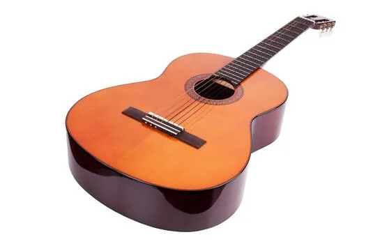
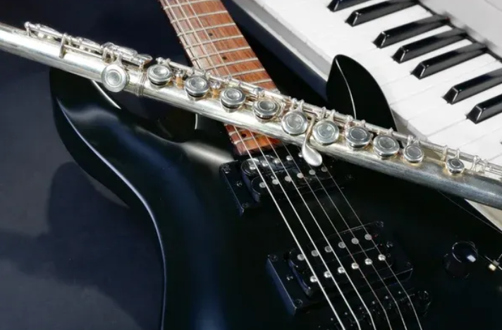
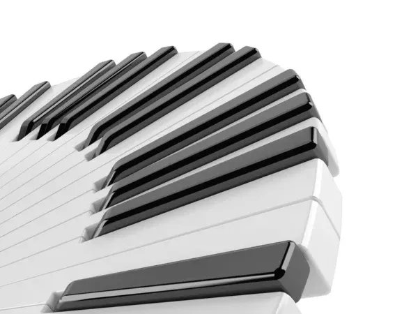
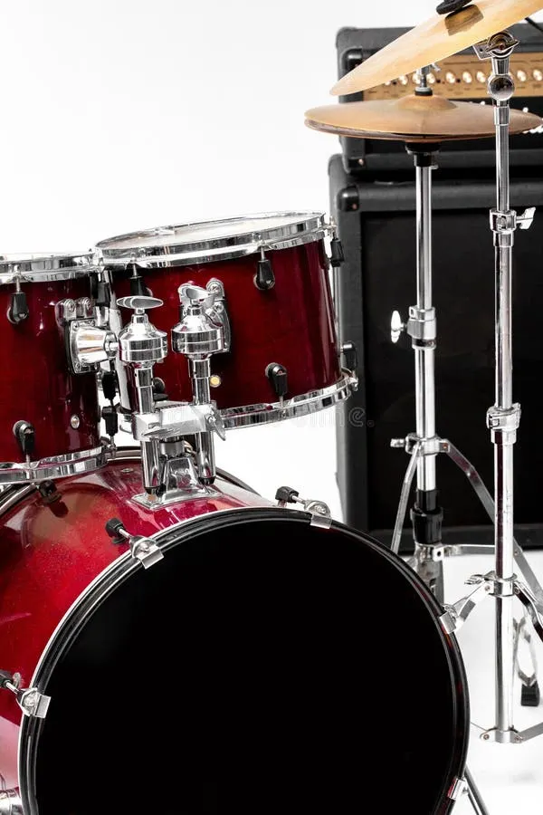
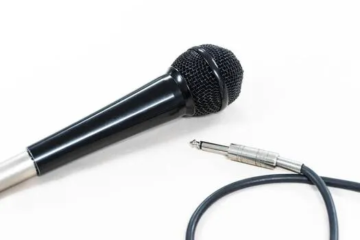

Catálogo con +340 referencias
Tu música merece el equipamiento adecuado
Especialistas en instrumentos musicales, amplificación y servicio técnico profesional en la Región de Valparaíso.
01 · Quiénes Somos
11 Años impulsando el talento musical
Ubicados en el corazón de Viña del Mar, en Sonido Vivo nos apasiona acompañar a músicos emergentes y profesionales en la búsqueda de su sonido ideal.
Contamos con una amplia variedad de instrumentos musicales, equipos de sonido y accesorios con más de 340 referencias en inventario continuo. Atendemos de forma cercana en nuestro showroom y realizamos envíos a todo Chile.
+11
Años de trayectoria
340+
Productos disponibles
100%
Garantía y soporte

Categorías Principales
Encuentra los instrumentos y accesorios que estás buscando.



03 · Servicio Técnico
Taller de Reparación de Instrumentos de Cuerda
Ajustes, mantención y calibración profesional para guitarras eléctricas, acústicas, bajos y ukeleles.
📍
Recepción Exclusivamente Presencial: El ingreso de instrumentos se realiza de forma presencial en nuestro local en Viña del Mar. No recibimos encomiendas ni envíos por Starken/Chilexpress para reparaciones.
🎸
Exclusivo Instrumentos de Cuerda: Atendemos exclusivamente guitarras, bajos y ukeleles. No realizamos servicio técnico de teclados, baterías ni amplificadores.
🔍
Diagnóstico Gratuito
Revisión inicial en mesón sin costo de evaluación.
⏱️
Entrega Estimada
Calibraciones estándar listas en 48 a 72 horas hábiles.
- ✓ Calibración completa, octavación y ajuste de alma.
- ✓ Cambio de cuerdas, rectificado, coronado y pulido de trastes.
- ✓ Circuitos electrónicos, blindajes y cambio de cápsulas.
Conoce Nuestra Tienda y Sonido
Echa un vistazo a nuestras instalaciones en Viña del Mar y la prueba de nuestros equipos.